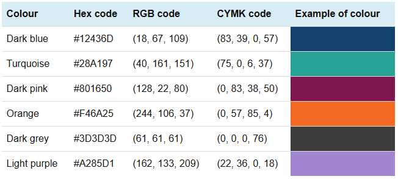
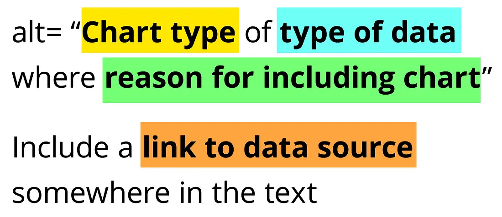

Code
library(highcharter)
library(palmerpenguins)
#data(package = 'palmerpenguins')
penguinsInspired by the quarto and me blog, I am looking into using {highcharter} (Kunst 2022). This package is a wrapper for Highcharts – an interactive charting library1.
1 this needs a license for commercial and governmental use
In this post I will only be considering a scatter graph. Different plots – including survival curves – will come later.

My main requirements are mostly subjective:
Lets use the {palmerpenguins} data2 (Horst, Hill, and Gorman 2020).
2 because penguins are nicer than eugenicists
This is also the first time I have used the base R pipe |>, after a life-time (well, 5 years) of using %>%. The differences between the two are explain in this tidyverse blog. This means that the below code will not work on R versions prior to 4.1.0.
library(highcharter)
library(palmerpenguins)
#data(package = 'palmerpenguins')
penguinsA basic scatter graph, using the hchart function. Here, hcaes is similar in spirit to ggplot’s aes.
hchart(penguins,"scatter",
hcaes(x = flipper_length_mm, y = bill_length_mm, group = species))
Lets change a few things about the plot:

hc_penguins <- hchart(penguins,"scatter",
hcaes(x = flipper_length_mm, y = bill_length_mm, group = species)) |>
# x axis label
hc_xAxis(title = list(text = "Flipper Length (mm)")) |>
# y axis label
hc_yAxis(title = list(text = "Bill Length (mm)")) |>
# title and subtitle
hc_title(text = "Gentoo's have <i>big</i> flippers!",
margin = 20, # space between title (or subtitle) and plot [default = 15]
align = "left",
stlyle = list(useHTML = TRUE)) |>
hc_subtitle(text = "A scatter graph showing the relationship between flipper length
and bill length, for Adelie, Chinstrap and Gentoo penguins",
align = "left") |>
# a source
hc_credits(
text = "Chart created using R and highcharter",
href = "http://jkunst.com/highcharter",
enabled = TRUE
) |>
# hover box options
hc_tooltip(
headerFormat = "<b>{series.name}</b><br>",
pointFormat = "Flipper Length: {point.x} mm<br>Bill Length: {point.y} mm"
#> valueSuffix applies globally but only when values are displayed individually
#> here, displayed twice so hard-coded into 'pointFormat'
#>valueSuffix = " mm"
) |>
hc_colors(c("#12436D", "#28A197", "#801650"))
hc_penguinsHere we assume the visually aspects of the graph are accessible.3 In this section I will add the following capabilities to the graph.
3 This is probably a big assumption. I am assuming the following information given by the Government Analysis Function (which apply to static charts) has been applied:
First, lets try and include a menu to export the data and the plot as an image – this requires using a module. Examples of using modules and plug-ins4 in {highcharter} are given in the modules vignette.
4 I’m not sure what the difference is between a ‘module’ and a ‘plug-in’, except that the ‘.js’ files seem to live in different folders.
hc_penguins2 <- hc_penguins |>
#hc_add_dependency(name = "modules/exporting.js") |>
#hc_add_dependency(name = "modules/export-data.js") |>
hc_exporting(
enabled = TRUE,
filename = "palmer_penguins"
)
hc_penguins2hc_add_dependency
In the quartoandme blog, the following lines are included in the ‘working example’:
hc_add_dependency(name = "modules/accessibility.js") |>
hc_add_dependency(name = "modules/exporting.js") |>
hc_exporting(
enabled = TRUE
)But, (I think) the hc_exporting() function automatically includes the exporting.js and export-data.js modules when enabled = TRUE, so the two hc_add_dependency calls are unnecessary. I’m willing to be proved wrong here.

In this section we add alt-text to the plot, to allow those using screen readers to understand the plot. )
First, lets add accessible descriptions to the plot, by enabling the accessibility options in hc_xAxis and hc_yAxis.
hc_penguins4 <- hchart(penguins,"scatter",
hcaes(x = flipper_length_mm, y = bill_length_mm, group = species)) |>
hc_add_dependency(name = "modules/accessibility.js") |>
# x axis label
hc_xAxis(title = list(text = "Flipper Length (mm)"),
accessibility = list(
enabled = TRUE,
description = "flipper length in millimeters"
)) |>
# y axis label
hc_yAxis(title = list(text = "Bill Length (mm)"),
accessibility = list(
enabled = TRUE,
description = "bill length in millimeters"
)) |>
# title and subtitle
hc_title(text = "Gentoo's have <i>big</i> flippers!",
margin = 20, # space between title (or subtitle) and plot [default = 15]
align = "left",
stlyle = list(useHTML = TRUE)) |>
hc_subtitle(text = "A scatter graph showing the relationship between flipper length
and bill length, for Adelie, Chinstrap and Gentoo penguins",
align = "left") |>
# a source
hc_credits(
text = "Chart created using R and highcharter",
href = "http://jkunst.com/highcharter",
enabled = TRUE
) |>
# hover box options
hc_tooltip(
headerFormat = "<b>{series.name}</b><br>",
pointFormat = "Flipper Length: {point.x} mm<br>Bill Length: {point.y} mm"
#> valueSuffix applies globally but only when values are displayed individually
#> here, displayed twice so hard-coded into 'pointFormat'
#>valueSuffix = " mm"
) |>
hc_colors(c("#12436D", "#28A197", "#801650")) |>
hc_exporting(
accessibility = list(
enabled = TRUE # default value is TRUE
),
enabled = TRUE,
filename = "palmer_penguins"
) |>
hc_plotOptions(
accessibility = list(
enabled = TRUE,
keyboardNavigation = list(enabled = TRUE)
)
)
hc_penguins4Note that the desciption in hc_xAxis and hc_yAxis does not start with a capital letter. The reason why is clear from looking at the html output below. Here, aria-hidden="false" refers to Accessible Rich Internet Applications, and is telling screen readers not to ignore this section.
<div id="highcharts-screen-reader-region-before-4"
aria-label="Chart screen reader information, Gentoo's have big flippers!."
style="position: relative;" role="region" aria-hidden="false">
...
<h4>Gentoo's have big flippers!</h4>
<div>Scatter chart with 3 data series.</div>
...
<div>The chart has 1 X axis displaying flipper length in millimeters. Range: 171.41 to 231.59.</div>
<div>The chart has 1 Y axis displaying bill length in millimeters. Range: 30 to 65.</div></div></div>The alt-text is saved as a string to the alt_text_penguins object.
alt_text_penguins <- "A scatter plot displays the relationship between bill
length (mm) on the y-axis and flipper length (mm) on the x-axis for
three penguin species: Adelie, Chinstrap, and Gentoo. Each species is
represented by a different colour: dark blue for Adelie, teal for Chinstrap,
and burgundy for Gentoo. Gentoo penguins have the largest flipper and bill
lengths, forming a distinct cluster towards the upper right of the graph.
Adelie penguins have smaller flipper and bill lengths, clustering at the lower
left, while Chinstrap penguins are positioned between the other two species.
The chart highlights that Gentoo penguins have notably large flippers."The simple way to include this alt-text in the plot would be to use the hc_chart() function with the accessibility.description option set to equal alt_text_penguins. But, as discussed in the Highcharts accessibility documentation,
Note: Since Highcharts now supports captions and linked descriptions, it is preferred to define the description using those methods, as a visible caption/description benefits all users. If the
accessibility.descriptionoption is defined, the linked description is ignored, and the caption is hidden from screen reader users.
hc_penguins4 |>
hc_chart(
accessibility = list(
description = alt_text_penguins
)
)linkedDescriptionHere, we first define an external HTML element, where the <div> with an ID (chart-description) contains the description of the chart. Then, then the linkedDescription option in hc_chart(accessibility = ...) connects the chart to the <div> by its ID.
If accessibility.description is also defined in the chart, it will override the linked description, as mentioned in the documentation.
# Add an external description for the chart
description_id <- "chart-description"
cat(sprintf(
'<div id="%s">
A scatter plot displays the relationship between bill length (mm) on the y-axis
and flipper length (mm) on the x-axis for three penguin species: Adelie, Chinstrap,
and Gentoo. Each species is represented by a different colour: dark blue for Adelie,
teal for Chinstrap, and burgundy for Gentoo. Gentoo penguins have the largest flipper
and bill lengths, forming a distinct cluster towards the upper right of the graph.
Adelie penguins have smaller flipper and bill lengths, clustering at the lower left,
while Chinstrap penguins are positioned between the other two species.
The chart highlights that Gentoo penguins have notably large flippers.
</div>',
description_id
))<div id="chart-description">
A scatter plot displays the relationship between bill length (mm) on the y-axis
and flipper length (mm) on the x-axis for three penguin species: Adelie, Chinstrap,
and Gentoo. Each species is represented by a different colour: dark blue for Adelie,
teal for Chinstrap, and burgundy for Gentoo. Gentoo penguins have the largest flipper
and bill lengths, forming a distinct cluster towards the upper right of the graph.
Adelie penguins have smaller flipper and bill lengths, clustering at the lower left,
while Chinstrap penguins are positioned between the other two species.
The chart highlights that Gentoo penguins have notably large flippers.
</div>hc_penguins4 |>
hc_chart(
accessibility = list(
linkedDescription = description_id
)
)